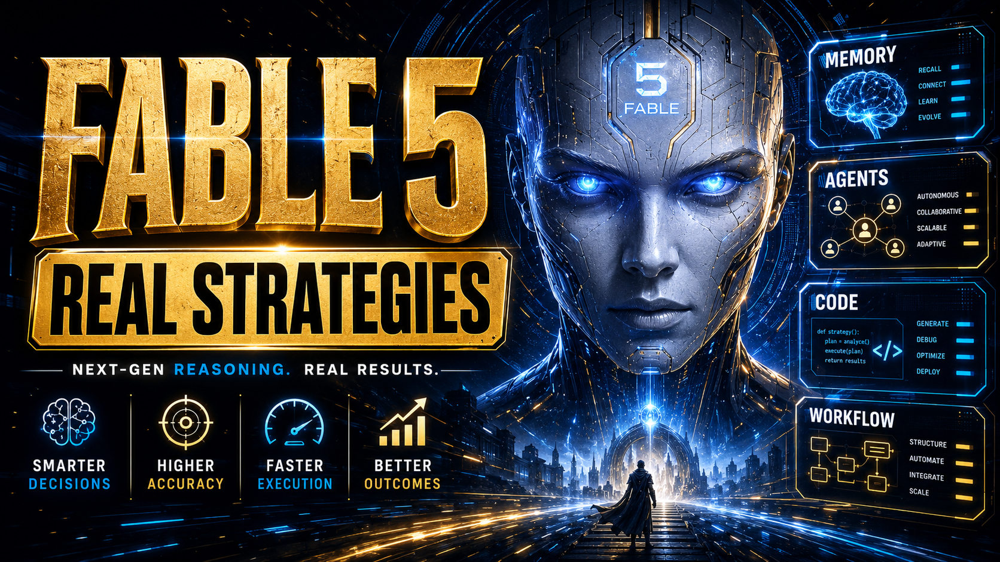

O que é este curso
Claude Fable 5 é o modelo mais forte — e mais caro — do catálogo atual da Anthropic. Voltou a ficar disponível globalmente em 1 de julho de 2026, depois de uma suspensão temporária ligada a export controls do governo dos EUA. Este curso ensina a prompar bem esse modelo especificamente, não a usar Claude em geral.
O conteúdo cruza uma aula em vídeo com 6 técnicas práticas contra a documentação oficial da Anthropic, citando o texto oficial sempre que existe uma citação verificável — e marcando claramente quando algo é prática geral de prompt engineering, não uma citação literal do doc do Fable 5.
💰 Pricing oficial (platform.claude.com/docs/pricing)
| Modelo | Input | Cache hit | Output |
|---|---|---|---|
| Claude Fable 5 / Mythos 5 | $10/MTok | $1/MTok | $50/MTok |
| Claude Opus 4.8 | $5/MTok | — | $25/MTok |
| Claude Sonnet 5 (até 31/ago/2026) | $1/MTok | — | $5/MTok |
| Claude Haiku 4.5 | $0.50/MTok | — | $2.50/MTok |
Fable 5 custa exatamente o dobro do Opus 4.8 (input e output) — o mais caro do catálogo. Batch API (50% off) reduz Fable 5 pra $5/$25 por MTok. Contexto: janela de 1M tokens por padrão, sem "prêmio" de preço por contexto longo.
🗓️ Contexto rápido: por que este curso agora
Fable 5 e Mythos 5 lançaram em 9 de junho de 2026. Em 12 de junho, o governo dos EUA aplicou export controls aos dois modelos e, como não dava pra verificar nacionalidade em tempo real, a Anthropic suspendeu o acesso pra TODOS os usuários. O motivo real: pesquisadores da Amazon reportaram um jeito de contornar os safeguards do Fable 5 — mas o teste da própria Anthropic confirmou que modelos bem menos capazes (Opus 4.8, GPT-5.5, Kimi K2.7, e até Haiku 4.5, Sonnet 4.6 e Opus 4.6/4.7) conseguiam produzir a mesma demonstração de exploit. Não era uma capacidade exclusiva do Fable 5 — a suspensão foi precaução regulatória. Em 1 de julho de 2026 (hoje), os dois modelos voltam globalmente.
Capacidades destacadas oficialmente (vs. Opus 4.8)
Fonte: doc oficial "Introducing Claude Fable 5", comparando com Opus 4.8. Relatos de early adopters (não oficiais): Dan Shipper/Every deu 91/100 no benchmark "Senior Engineer" (ante 63 do Opus 4.8); Boris Cherny (Anthropic) chamou publicamente de "o melhor modelo que já usei para código, por uma margem larga".
💡 Como eu decido qual modelo usar
Isso corresponde à forma como eu gerencio o processo no dia a dia. Uso o Opus para a etapa de arquitetura, o Sonnet quando a tarefa está bem definida, e o Fable quando a tarefa é complexa e precisa de um ciclo de investigação próprio. O recurso de chamada do OpusPlan é subestimado: a maioria das pessoas nunca o utiliza explicitamente e depois se pergunta por que o Opus não faz a transição automaticamente.
Como funciona o curso
2 trilhas, 14 módulos, 84 tópicos. Trilha 1: as 6 técnicas de uma aula em vídeo, cada uma cruzada com a documentação oficial da Anthropic, mais um módulo bônus com truques extras que só estão na doc. Trilha 2: 12 dicas práticas pra usar o Fable 5 como agente de trabalho — tarefa certa, profundidade, limites, verificação, subagentes, memória e loops — mais um módulo bônus com o prompt mestre.
✓ O que este curso cobre
- ✓As 6 técnicas de prompting da aula, cada uma cruzada com citação oficial quando existe
- ✓Effort levels (max / xhigh / high / medium / low) e quando usar cada um
- ✓As 4 categorias de recusa de segurança e as formas de configurar fallback pro Opus 4.8
- ✓Extras oficiais: subagents, sistema de memória e a tool send_to_user
✗ O que este curso NÃO é
- ✗Não é sobre a polêmica geopolítica do export control — isso é contexto de 1 parágrafo, não o assunto central
- ✗Não é um curso genérico de "como usar Claude" — é específico de prompting pro Fable 5
- ✗Não inventa número ou capacidade além do que a Anthropic documentou

📖 Prompting Claude Fable 5
Contexto, técnicas de prompting oficiais, effort levels, roteamento de segurança e os extras da documentação — tudo pra tirar o máximo do modelo mais forte da Anthropic.
🧠 Fable 5 como Agente de Trabalho
Da resposta pontual ao sistema de trabalho: 12 dicas práticas pra usar o Fable 5 como agente sênior — tarefa certa, profundidade, limites, verificação, subagentes, memória e loops — mais um módulo bônus com o prompt mestre.